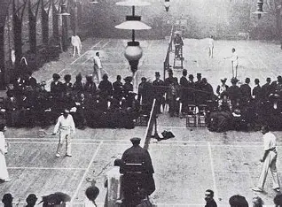
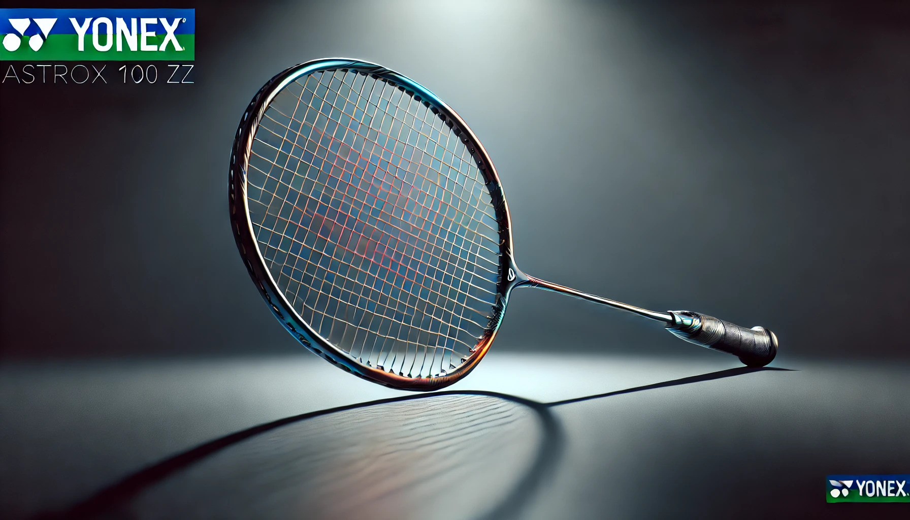

Where and how did badminton originate?
Badminton originated from earlier shuttlecock games played in different parts of the world, but the version of the sport we know today mainly developed in the 19th century. British army officers stationed in India played a game called “Poona,” which involved hitting a shuttlecock back and forth over a net, and they brought it back to England. The sport became popular at a gathering held at Badminton House in England, which is where it got its name. From there, the rules were refined and standardized in the late 1800s, leading to the modern indoor racket sport that spread internationally.
Evolution into modern badminton
Its benefits, why people should play and learn -

The Equipment & Gear
What you need, Price Ranges and how expensive it is -
To play badminton you need a racquet, shuttlecocks, and access to a court or a suitable open space. Beginner racquets and basic shuttlecocks are fairly cheap, usually around $20–$80, making it easy to start without spending much. More advanced racquets, shoes, and equipment used by competitive players can range from $100–$200+ depending on quality and brand
Badminton is a sport where players use rackets to hit a shuttlecock over a net, either alone or in teams of two. Points are scored when the shuttlecock lands in the opponent’s court. It’s a fast and energetic game that emphasizes skill, speed, and strategy, making it fun for beginners and competitive players alike.